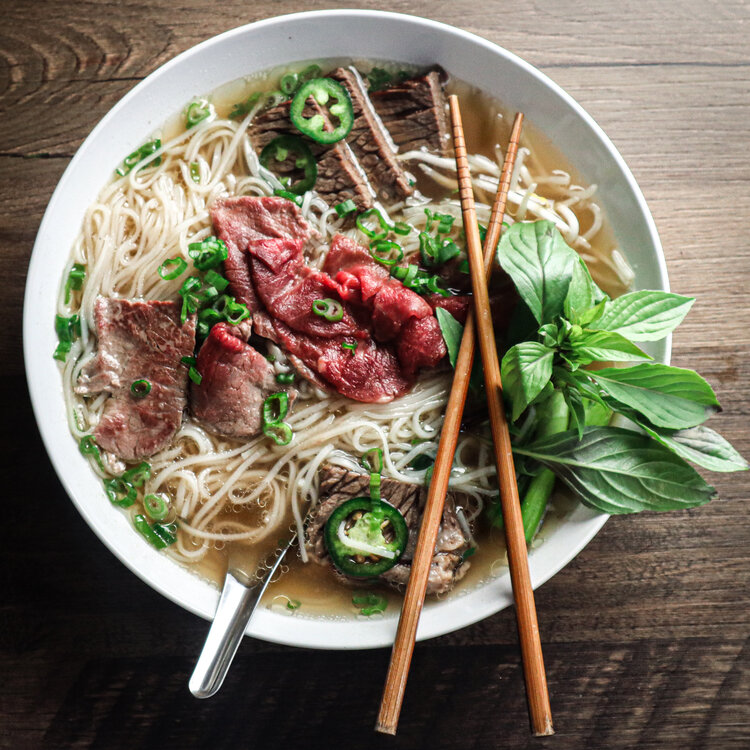

Pho Dac Biet Recipe

Description
Made from scratch with the signature broth that’s light yet at the same time so full of flavour, it’s infused with spices like cinnamon, star anise and cardamom.
Ingredients
Broth
- 2.2 lbs beef marrow
- 2 lbs beef brisket
- 1 lb beef tripe
Aromatics
- 2 oz fresh ginger
- 2 large yellow onion
Spices
- 5 Star anise
- 2 Tbsp coriander seeds
- 1 Tbsp white peppercorns
- 1 large cinnamon stick
- 1 Tbsp cloves
Seasonings
- 1 Tbsp salt
- 1 Tbsp sugar
- 1 Tbsp chicken powder
Steps
- 2 lbs fresh pho noodles
- 10 oz beef tenderloin
- 12 oz Vietnamese beef balls
- Fresh bean sprouts
- Handful of basil
- Limes
- Culantro leaves
- 2 stalks green onion
- 1 Onion thinly sliced
- Jalpeno peppers thinly sliced